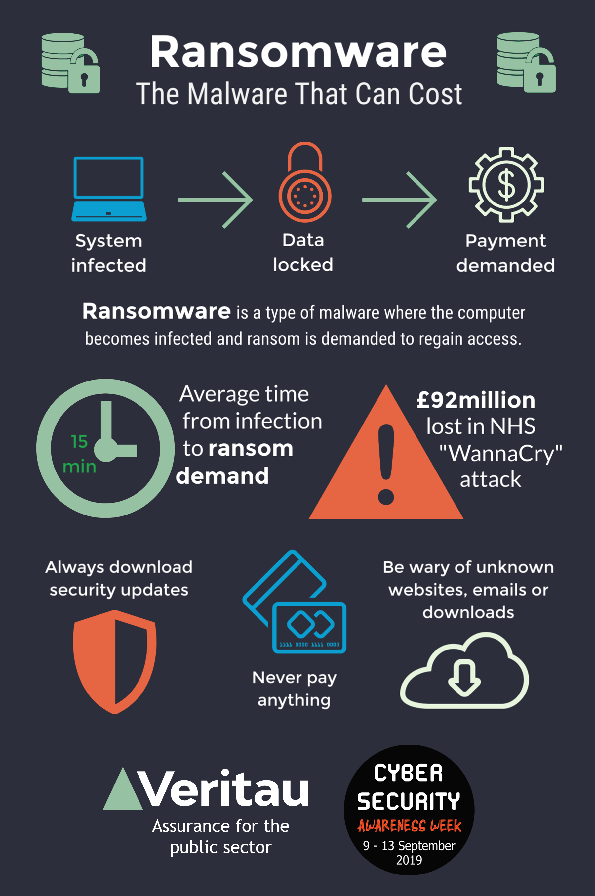

Ransomware Attacks
Ransomware has become a significant cybersecurity threat that causes financial burden for the victim. Ransomware attacks involve criminal hackers targeting a system and then encrypting the files of that system, so they are inaccessible to the user. Then, the attack demands a ransom from the victim if they want to be able to access those files again. These attacks target everyday people as well as businesses or any organization that an attacker might suspect has the money to pay the ransom. Although every year the threat of ransomware grows, it has actually been utilized since the 1980s. The first case of ransomware was documented in 1989 when a virus was released through floppy disks that essentially hijacked the user’s system. The victims were asked to mail a check to an address outside of the United States in order for their computer to be freed. To mitigate this threat, the first line of defense is to have backup files that save the data in a place where the ransomware attacker wouldn’t be able to tamper with the files. This could even be an offline area like a USB drive or other computer. Since then, ransomware has become an increasingly popular way for criminals to make money off people who are willing to pay a ransom to restore their stolen or tampered files. The majority of victims were small businesses up to mid and high-level businesses; however, anyone can be a victim of this crime (“ransomware”). The picture shown is an example of how ransomeware works from the attacker to the victim (Veritau, 2019).

There are a few ways to mitigate ransomware. The first solution is to limit access to remote desktop protocols which are internet ports that allow computers to remotely access other off-site computers. Some of those ports are vulnerable to ransomware attacks, and limiting the connections to only specific hosts could prevent them from becoming compromised. Another way to mitigate ransomware is to maintain good “IT hygiene”, or otherwise have good habits when it comes to protecting themselves. That means that users should maintain complex passwords, not download or click on suspicious links, and have some kind of virus and malware reporting system in place to make for a quick response to a possible case of ransomware. Lastly, to mitigate the effects of a successful ransomware attempt, potential victims should have their files backed up in an off-site or offline location so that the attackers cannot access them or change them. This makes the capturing of the original files nearly useless, and the ransom can likely be ignored. According to a study on ransomware, approximately 70% of international businesses were affected by ransomware attacks, and the majority of the victims paid some type of ransom in order to save their data. Cybersecurity experts predict that there will continue to be an upward trend of ransomware attacks throughout the world, meaning that the issue is only becoming more serious with no solution in sight.